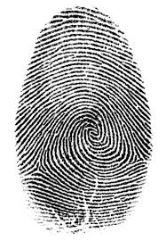

Giraffemania
Perhaps the best-known giraffe celebrity in history is Zarafa, the first giraffe in France and a royal gift to King Charles X from Muhammad Ali, the Ottoman viceroy of Egypt. Zarafa—meaning “The Lovely One” in Arabic—arrived in France in October 1826. She was paraded from Marseilles to Paris at a leisurely pace, and her regal and friendly demeanor made her the toast of the town wherever she went — 100,000 members of the adoring public came out to follow her progress.
Eventually, Zarafa set up shop in the Jardin des Plantes in Paris and became the biggest celebrity in the entire country. Famous writers wrote stories about her. Acclaimed artists painted pictures inspired by her. Women started wearing high “giraffe” hairstyles and clothing with giraffe spots patterned after her. Giraffe-themed furniture and decorations were all the rage, and eventually the entire continent of Europe caught "Giraffemania.”
Did you know?
A giraffe’s spots are much like human fingerprints. No two individual giraffes have exactly the same pattern.
